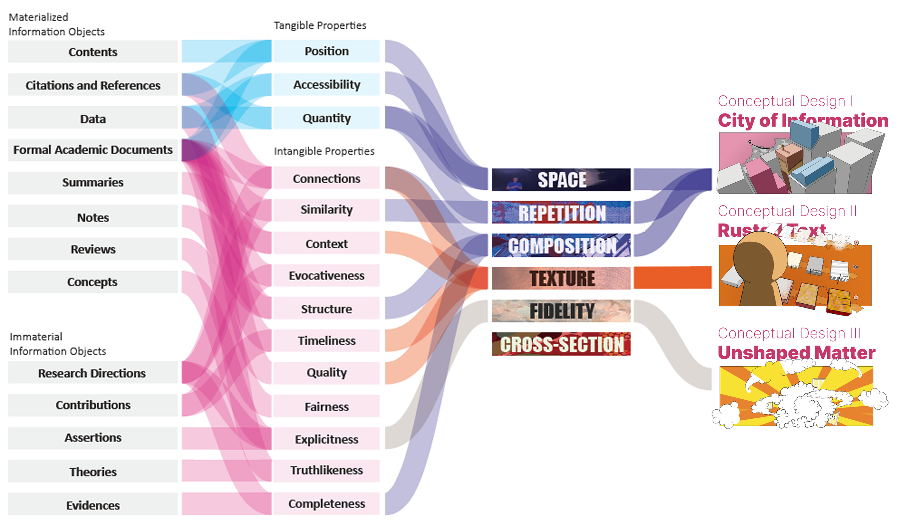
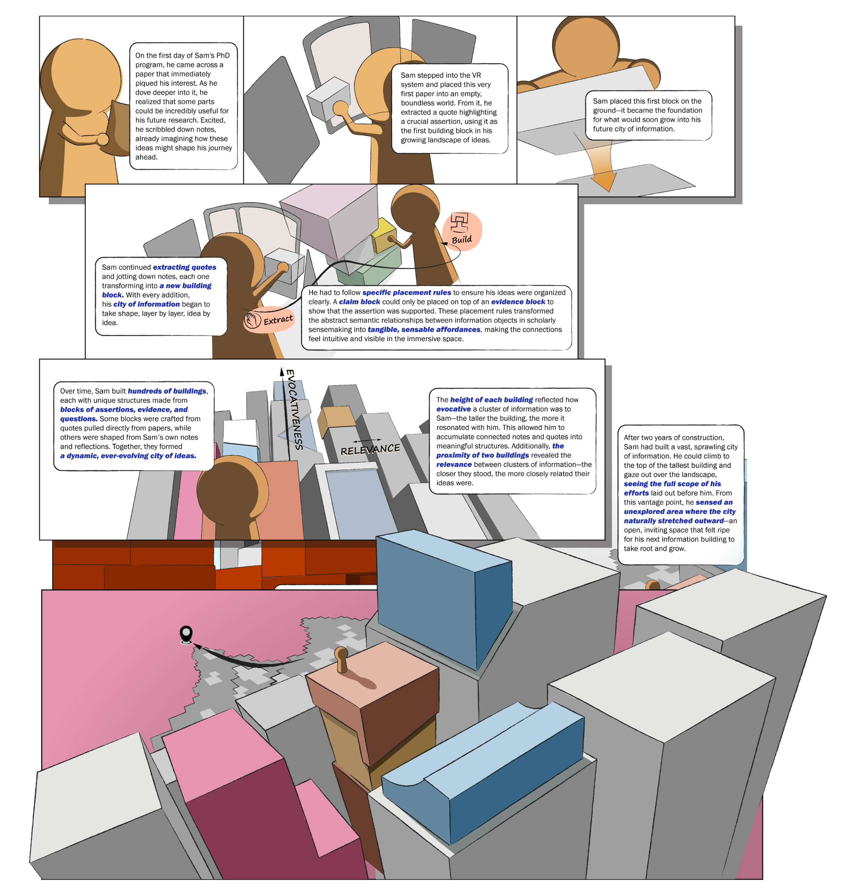
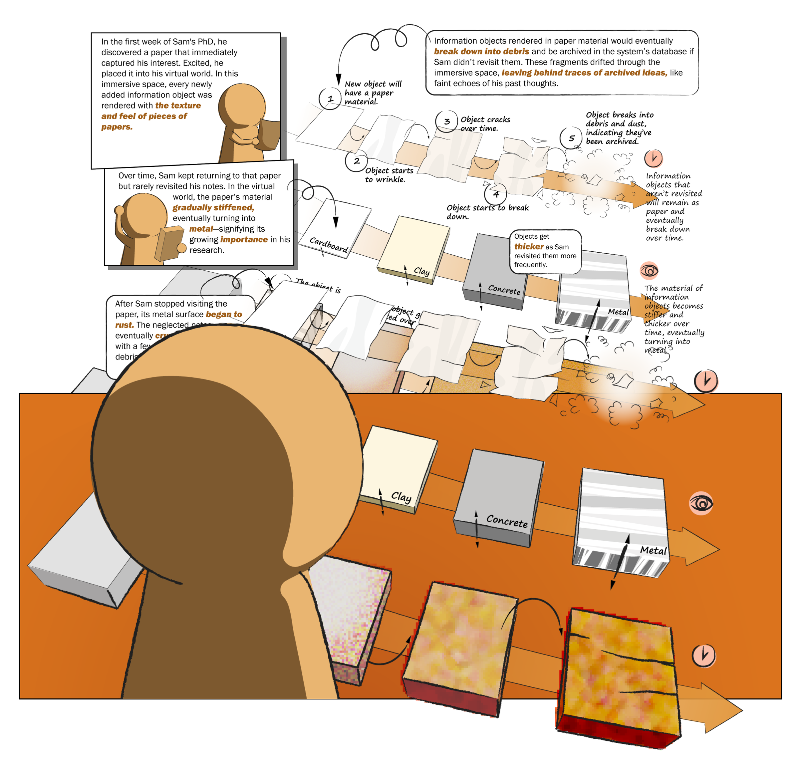
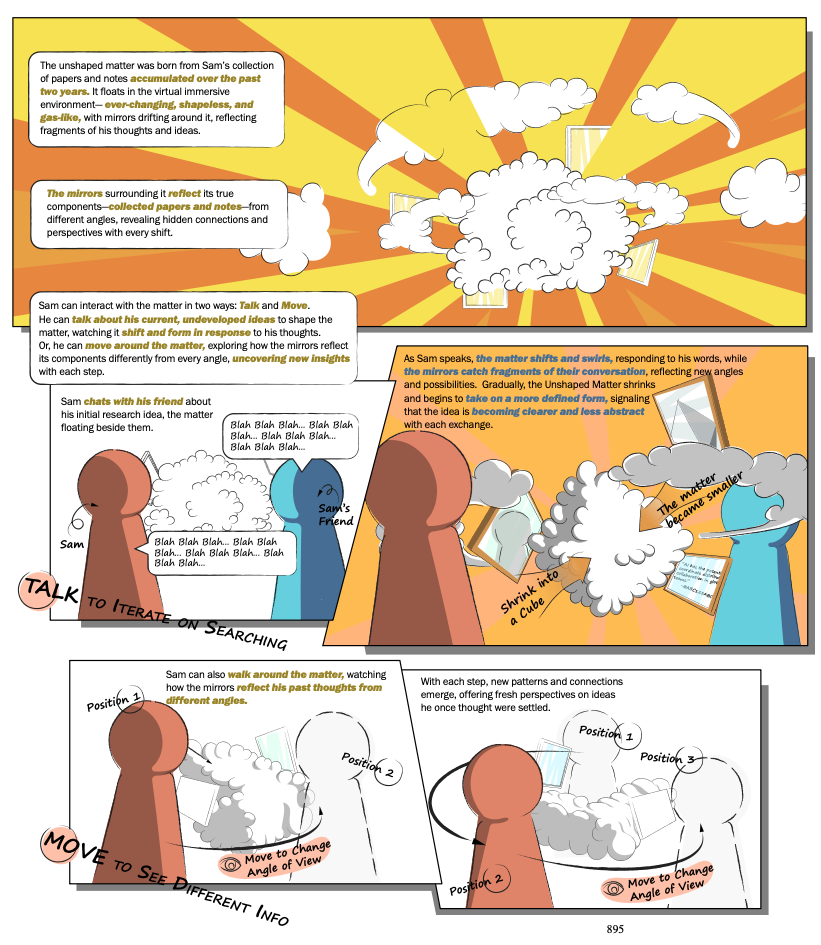

Sense and Sense-ability: Exploring Future Immersive Environments for Scholarly Sensemaking
2025
Creativity & Cognition 2025 · Pictorial · Siyi Zhu and Joel Chan
Research questions, claims, and theories carry properties that often require substantial interpretation to uncover. We reviewed scholarly sensemaking research and studied visual strategies in modern art to explore how these qualities might take sense-able forms. The result is a design toolkit and three speculative concepts for immersive scholarly work.
38 HCI papers
113 artworks
6 visual patterns
Read the publication
CC BY 4.0
From information to form
A search of the ACM Digital Library returned 949 records. Screening retained 83 papers about scholarly sensemaking and then 38 focused on abstract, qualitative information. We extracted information objects and their properties from these studies.
I also explored 113 artworks across three museums and collected 365 photographs. The artwork selection was exploratory rather than systematic. These observations informed visual strategies that could be combined with the literature findings.
My role
First author and designer; scholarly-information review, artwork exploration, and conceptual design work with Joel Chan.

A toolkit for sense-ability
The review distinguishes familiar information artifacts, such as papers and notes, from objects such as theories, assertions, and research directions whose forms are less standardized. It also identifies properties including context, structure, timeliness, quality, and truthlikeness.
Six visual strategies offer material for design: space, composition, fidelity, texture, cross-section, and repetition. Combining these strategies with scholarly information properties opens possibilities beyond presenting more text.
City of Information
Assertions, evidence, and questions become typed building blocks in a persistent virtual city. Placement rules make semantic relationships tangible: for example, a claim can sit on evidence that supports it.
Building height conveys evocativeness, proximity signals relevance, and repeated structures reveal patterns across a growing body of knowledge.
As the city expands, landmarks support retrieval and undeveloped regions suggest possible research directions.

Rusted Text
Rusted Text uses texture and material as a “digital patina” for timeliness. New information begins as paper; frequently revisited objects become thicker and more permanent.
Neglected objects wrinkle, stiffen, rust, crack, and eventually break into archived debris. Age and attention become qualities that scholars can perceive at a glance.
The concept replaces an abstract timestamp with an embodied material history of a scholar’s relationship to information.

Unshaped Matter
A shifting, gas-like form represents the incomplete and implicit state of an emerging research idea. Mirrors around it surface papers and notes from different perspectives.
Speaking about the idea records new notes and retrieves related information. As the idea becomes more explicit and complete, the matter shrinks and takes on a clearer form.
Moving around the object changes the angle of reflection, turning bodily position into a way to reveal different connections and possible interpretations.

From possibilities to prototypes
The contribution is a design vocabulary for imagining how abstract scholarly information could become perceptible and manipulable. The concepts illustrate possibilities rather than established performance benefits.
This work sets up the design and prototype chapter of my dissertation, where I move from speculative forms to reusable statement structures, embodied interactions, and formative work with researchers.